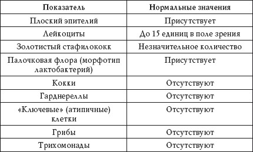

Бактериоскопия
Лабораторный метод исследования влагалищного мазка под микроскопом – бактериоскопия – известен большинству женщин как мазок на флору, или общий мазок.
Нормальные показатели анализа представлены в таблице 75.
Таблица 75
Общий мазок. Нормальные показатели

Плоский эпителий
Количество эпителиальных клеток, покрывающих влагалище и шейку матки, меняется в зависимости от фазы менструального цикла, а также от применяемых гормональных препаратов. В середине цикла, во время беременности и при приеме эстрогенов во влагалищном мазке эпителиальных клеток больше.
Отсутствие эпителия
Отсутствие эпителиальных клеток наблюдается при:
• недостатке эстрогенов;
• избытке мужских половых гормонов;
• атрофии эпителия.
Лейкоциты
Повышенный показатель
Повышение количества лейкоцитов наблюдается при воспалении влагалища, связанном с кольпитом, вагинитом или ЗППП.
Чем больше в мазке лейкоцитов, тем острее протекает заболевание.
Золотистый стафилококк
Повышенный показатель
Повышение количества золотистых стафилококков в мазке наблюдается при:
• воспалительном процессе во влагалище;
• эндометрите.
Палочковая флора
Это нормальная флора, то есть микроорганизмы, которые обязательно должны присутствовать в кислой среде влагалища.
Кокки
Положительный результат
Наличие в мазке кокков наблюдается при:
• гонорее;
• бактериальном вагинозе.
Гарднереллы
Положительный результат
Наличие в мазке гарднерелл наблюдается при:
• гарднереллезе;
• дисбактериозе влагалища.
«Ключевые» клетки
Положительный результат
Наличие в мазке «ключевых» клеток наблюдается при дисбактериозе влагалища.
Грибы
Положительный результат
Наличие в мазке грибов наблюдается при кандидозе (молочнице). Если в анализе обнаруживаются споры грибов, это говорит о скрытом кандидозе (бессимптомном).
Трихомонады
Положительный результат
Наличие в мазке трихомонад наблюдается при трихомониазе. Если в мазке обнаружены трихомонады, пациентке обязательно следует сдать анализ на ЗППП, поскольку трихомониаз може«прикрывать» собой гонорею, которая в этом случае протекает параллельно и при бактериоскопии не обнаруживается.
Мазок на «стерильность»
Это мазок на степень чистоты влагалища. Анализ определяет состав его содержимого, который в норме представлен кокковой микрофлорой, секретом и разными клетками эпителия.
Для исследования степени чистоты влагалища используют стерильный тампон, который вводят во влагалище на 8 часов (лучше на ночь), а затем отправляют в лабораторию.
Степень «стерильности» в результатах анализа выражается в цифрах: «1» и «2» – нормальный показатель, «3» и «4» – воспаление влагалища (кольпит).
Мазок на цитологию
Этот анализ позволяет выявить отклонения со стороны клеток шейки матки. Исследуется их количество, размеры, форма и характер расположения.
Мазок считается нормальным (отрицательным), если все клетки имеют нормальные размеры и форму, а атипичные клетки отсутствуют.
Для описания аномального мазка используют специальные термины: дисплазия I, II и III степени и атипия. При дисплазии I степени рекомендуется пройти повторное обследование через 3-6 месяцев, поскольку такой результат может быть при недолеченном трихомониазе, хламидиозе или гонорее. При дисплазии II и III степени назначают более серьезное исследование состояния шейки матки – биопсию. При обнаружении атипии необходима консультация онколога.
Исследование мазка на цитологию рекомендуется проводить всем женщинам старше 20 лет 1 раз в год. Если результат дважды будет отрицательным, можно повторять анализ 1 раз в 3 года.
Мазок на скрытые инфекции
Такой анализ позволяет выявить ЗППП, которые невозможно определить при исследовании мазка на флору. Для анализа используют метод ПЦР (полимеразная цепная реакция), при котором возбудителя инфекции определяют по его ДНК.
Нормальным показателем этого анализа может быть только отрицательный результат. Если в бланке анализа напротив возбудителя инфекции написано «обнаружено» или стоит знак «+», значит, в исследуемом материале найдена ДНК соответствующей бактерии, и человек заражен этой инфекцией.